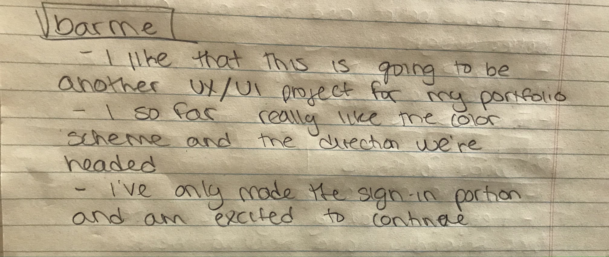

I'm working on this app with another student in class. We are basically doing another SMAD 317 project. We have all the research, we are now in the process of making low/high fidelity prototypes, wire-framing, and coming up with the look of the interface. Below is the process of the logo. I like the color scheme from the start, but it was the logo that was giving me trouble. The first two were suppose to be location points as beer, but they ended up looking like ice cream cones. Then the second one with the bar stools, I felt like there was too much happening. We are now working with the latest logo, which is a location point and a martini. I like this one because it looks professional and works with what the app does, finds bars close to the user. I'm keeping the color scheme and am now working on the XD portion.
